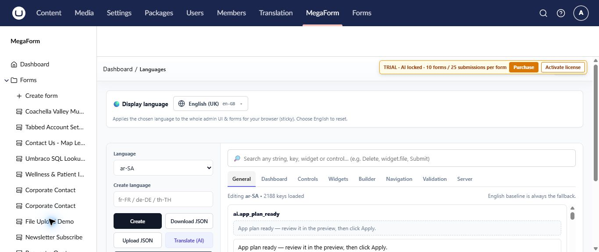

Languages and global settings on Umbraco
The MegaForm section includes language management for the administration experience and a global settings workspace for services shared by forms.
Choose and maintain languages
Open MegaForm → Languages to select the display language and maintain translated strings.

- Display language changes MegaForm administration and form labels for the current browser.
- The language list selects the translation set you want to edit.
- Search finds a string, key, widget, or control.
- Download JSON and Upload JSON support review and transfer of a translation set.
- Translate (AI) can prepare translations when AI is configured; review them before use.
English remains the fallback when a translated value is missing. Test validation, confirmation, and workflow messages as well as visible field labels.
Configure shared services
Open MegaForm → Settings for services used across forms.

| Area | Configure when you need it |
|---|---|
| Database Settings | Named database access for lookups or workflows |
| Payment Settings | Forms that collect or confirm payments |
| Email Settings | Confirmation, notification, or workflow email |
| Upload Settings | File upload limits and handling |
| Captcha Settings | Automated submission protection |
| AI Settings | AI Designer and assisted translation |
| Google Sheets | Workflows that send rows to a sheet |
| Cloud Storage | External storage for submitted files |
| License | Production package activation |
Change control
Global settings can affect many published forms. Record the previous value, test the new configuration, submit a representative form, and verify the result before considering the change complete. Keep secrets in server-side settings and never place them in form content or screenshots.